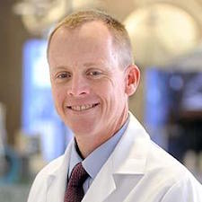
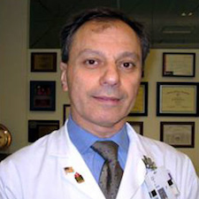

Donald W. Parsons, MD, PhD
Program Director, Pediatrician-Scientist Training and Development Program
Director, Pediatric Center for Personal Cancer Genomics and Therapeutics
Co-Director, Cancer Genetics and Genomics Program
Co-Director, Brain Tumor Program
Baylor College of Medicine and Texas Children's Hospital
Jatin Mahesh Vyas, MD, PhD
Program Director, Internal Medicine Residency Program
Associate Professor of Medicine
Massachusetts General Hospital and Harvard Medical School
Audrea Burns, PhD
Assistant Professor, Pediatrics
Associate Program Director, Pediatrician-Scientist Training & Development Program
Associate Program Director, Developing Investigative Scholar’s Program
Director of Special Projects, Section of Immunology, Allergy, & Rheumatology
Baylor College of Medicine and Texas Children’s Hospital

Ali J. Marian, MD
Professor and Director, Center for Cardiovascular Genetic Research
George and Mary Josephine Hamman Foundation Distinguished Professor in Cardiovascular Research
University of Texas Health Science Center at Houston
Hsiao-Tuan Chao, MD, PhD
Associate Program Director, Basic Neuroscience Track, Department of Pediatrics, Section of Child Neurology, Baylor College of Medicine
American Academy of Neurology Research Training Scholar
NIH Child Neurologist Career Development K12 Scholar
MSTP Alumna, Baylor College of Medicine
Charles Y. Lin, PhD
Assistant Professor, Molecular and Human Genetics
Co-Director THINC@BCM
Baylor College of Medicine
Erik Halvorsen, PhD
Director, Texas Medical Center Innovation Institute
Director, TMCx Accelerator
Board Of Directors, FAR Biotech
Member, Forbes Technology Council
Swathi Arur, PhD
Associate Professor, Department of Genetics, Division of Basic Science Research
Recipient of MD Anderson Distinguished Research Faculty Mentoring Award
Sabin Fellow
University of Texas MD Anderson Cancer Center
Meng Wang, PhD
Associate Professor, Huffington Center On Aging
Howard Hughes Medical Institute Investigator
Co-Director, Molecular and Human Genetics Graduate Program
Robert C. Fyfe Endowed Chair on Aging
Baylor College of Medicine